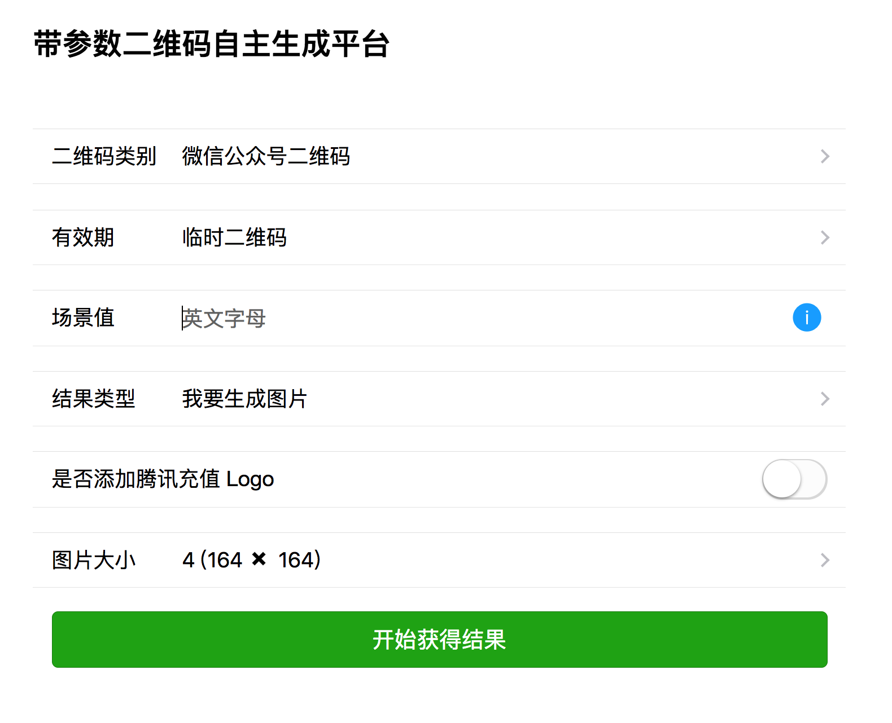

上次写 Koa 还是2016年刚来公司实习的时候，那时候我还在上大三。转眼见2年过去了，我也正式工作快一年了。 Koa 也从原来比较难用的 generator ，yield 变成了现在的 async await 。真好。
这次文章的背景是，产品需要给公众号拉新。需要生成各种带参数的二维码。这个带参数的二维码可以做很多事情，比如统计新拉的关注是从哪个场景值下来的。比如关注时，不同场景值有不同的公众号回复内容。
在经历了好几次每次手动跟她生成后，我下定了决心，跟产品要了2天排期，给她做一个工具。自动生成带 Logo 的二维码。主要是手工去操作比较繁琐，需要经历下面几步：
- 先去获得 access_token
- 再调用微信创建带参数值二维码的接口qrcode/create，获得 ticket
- 再拿 ticket 换二维码
这其中，带参数的二维码又分为了两种，永久和临时二维码。具体接口可以参考公众号的文档， 并且每次产品自己拿到 ticket 换的二维码后，还需要自己去 P logo, 大小也要自己去调。总之比较麻烦。
所以这篇文章，主要就是用 Koa2 生成带场景值参数的公众号二维码。💗🌹
设计
首先我确定了 koa server 端，只做接口层。意思是只用来处理前端的请求。 GET or POST。
前端主要做表单验证，获取产品想要的二维码类型信息等。然后传给后台。后台根据信息，去拿 access_token, 然后调用微信二维码，再添加 logo 等。然后返回给前端。最后的效果是这样的：

产品可以选择，是临时还是永久，选择是只要链接还是下载图片，是否添加 Logo ，图片的大小等等。
最后如果图片类型选的是【我要生成图片】就可以生成类似下面二维码啦， 如果是点击的 【我只要链接】，那么我只会返回一个带ticket的链接。
红色的笔部分是为了遮住二维码信息，因为是自己的测试号。主要用到了下面这些 npm 库： koa-router, koa-static, qr-image, request-promise, stream-to-promise, image-size
流程控制
写起来代码没有特别的地方，用 koa-router 做路由，比如产品选择生成链接，还是生成图片，我选择了路由到两个接口。
在配置文件， route.js 中，配置相应路由的请求以及对应的 controller
1 | module.exports = { |
这表明：
当前端 post getLink 这个接口时， 用 controllers 下的 createLink 来处理。
当前端 post downloadImage 这个接口时，用 controllers 下的 downloadImage 来处理。
然后再在自己写个注册路由的 middleware1
2
3
4
5
6
7
8
9
10
11
12
13
14
15
16module.exports = (app, router) => (
Object.keys(routesConfig).forEach(route => {
const [method, path] = route.split(' ')
const controller = require('../' + routesConfig[route])
if (typeof controller !== 'function' || typeof router[method] !== 'function') {
return
}
if (method === 'post') {
app.use(bodyParser())
}
router.post(path, controller)
})
)
然后在 入口文件中使用这个 middleware 并且注册到 koa-router 上即可。1
2
3routeMiddleware(App, router)
App.use(router.routes()).use(router.allowedMethods())
最后是对应的 controller 里处理文件, 比如如下是 downloadImage 的 controller, 把 data 传给了核心处理业务流程的类文件。然后再返回相应的图片即可。
1 | /** |
前端接受到这个 image 后，再利用 createObjectURL, revokeObjectURL 立即下载图片即可。下面展示的是前端这一部分处理的逻辑。1
2
3
4
5
6
7
8
9
10
11
12
13
14
15
16
17
18
19
20
21
22
23
24
25
26
27
28
29
30
31function fetchApi (url, data) {
return fetch(url, {
body: JSON.stringify(data),
headers: {
'Content-Type': 'application/json'
},
cache: 'no-cache',
method: 'POST',
mode: 'cors'
})
}
function getImageData(url, data) {
return fetchApi(url, data)
.then(response => response.blob())
}
function getImage(data) {
getImageData('/downloadImage', data)
.then(response => {
let a = document.createElement('a')
let url = window.URL.createObjectURL(response)
let filename = `${data.scene}-${+new Date()}.png`
a.href = url
a.download = filename
a.click()
window.URL.revokeObjectURL(url)
})
}
我用的浏览器原生的 Fetch Api， 因为不想在前端还引入别的库。注意 fetchApi 返回不同的内容，要用不同的内容处理。比如上面的图片是用的 response.blob() 处理，如果是返回的json， 需要用 response.json() 处理。
获取 AccessToken
注意如果没有自己的获取 AccessToken 的中控服务器，一定要缓存 accessToken, accessToken 有过期时间，并且一天有调用上限。部门内有专门的中控服务器，但是我还是自己试了下自己做缓存的流程，如下：
1 | const rp = require('request-promise') |
相当于每次调用后，要重新写入文件过期时间，如果过期时间到了，那么重新去更新。之所以拿 re.expires_in - 200, 是为了留点 buffer, 这个值当然可以自己去设置。
生成二维码
这里的 logo, 因为我们公众号只有一个 logo, 故直接是从文件中读取了。以后考虑把这个放在 github 的话，可能会支持用户可以自己上传 Logo。
还有一个地方要注意，就是计算 logo 的位置。直接除以二维码的高宽一半是不行的，还要减去 logo 的一半哦。
我这边在返回给前端下载的时候，也 save 到本地了，担心产品丢失信息。save 的时候，我以场景值和时间为名字，会方便日后好找一些。1
2
3
4
5
6
7
8
9
10
11
12
13
14
15
16
17
18
19
20
21
22
23
24
25
26
27
28
29
30
31
32
33
34
35
36
37
38
39
40
41 /**
* 添加 logo
* @param imageStream
* @returns {Promise<*>}
*/
async getLogo (imageStream) {
const imgBuffer = await streamToPromise(imageStream)
const { width: imgWidth, height: imgHeight } = imgSize(imgBuffer)
const logoWrapper = images("./static/assets/logo.png").size(imgWidth / 4)
const x = (imgWidth - logoWrapper.width()) / 2
const y = (imgHeight - logoWrapper.height()) / 2
return await this.drawImage(imgBuffer, logoWrapper, x, y)
}
/**
* 画图
* @param imgBuffer
* @param logoWrapper
* @param x
* @param y
* @returns {Promise<any>}
*/
async drawImage (imgBuffer, logoWrapper, x, y) {
return new Promise((resolve, reject) => {
const image = images(imgBuffer)
.draw(logoWrapper, x, y)
.save(`./static/image/${this.scene}-${+new Date()}.png`, {
quality : 50
})
if (!image) {
reject()
}
resolve(image)
})
}
入口文件
入口文件跟平常的入口文件基本上没有什么大区别。比较简单。1
2
3
4
5
6
7
8
9
10
11
12
13
14
15
16
17
18
19
20
21
22const Koa = require('koa')
const path = require('path')
const Router = require('koa-router')
const StaticServer = require('koa-static')
const config = require('./config')
const routeMiddleware = require('./middleware/route')
const App = new Koa()
const router = new Router()
const staticPath = './static'
App.use(StaticServer(path.join(__dirname, staticPath)))
routeMiddleware(App, router)
App.use(router.routes()).use(router.allowedMethods())
App.listen(config.port, () => {
console.log(`App listening on port ${config.port}`)
})
总结
想当一个优秀的 Nodejs 工程师，但是发现自己还远远不够，比如 fs 的函数不熟。比如对 Buffer, Stream 理解的不够深入。还是写的太少了。不过总算是按时完成了。解放了劳动力。🚫
下一步打算优化下代码，看能不能支持 upload logo, 支持传 appid, appkey, 这样别人也可以用了。还有很多基础工作没有做，比如 async, await 的错误处理，比如 logger, pm2 等。这个会慢慢完善，基础功能已 OK。 📚🏠